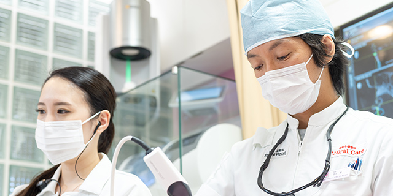
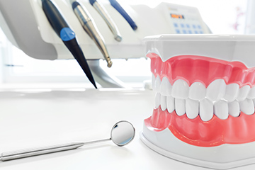
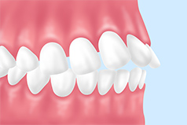
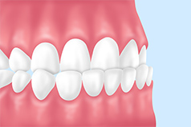
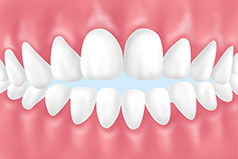
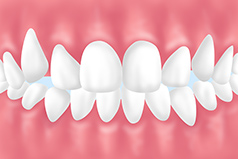
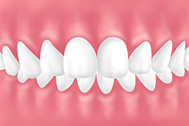
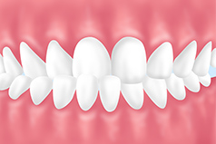
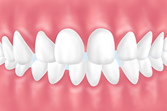
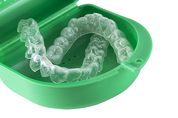

079-562-8471
079-562-8471- Home
- 噛み合わせ
噛み合わせは全身の健康にとっても大切ですOther

理想の噛み合わせとは、上下の歯がきちんと接触し、食べ物を噛むときに複雑な動きをしてもバランスが取れる状態です。噛み合わせのバランスが悪いと顔貌がゆがんでしまうことがあり、さらには全身のバランスにまで影響してしまうリスクを負います。兵庫県神戸市三宮の歯医者「北野坂鳥居歯科医院」では、お口全体の健康を考え、噛み合わせを整える治療をご提供します。
噛み合わせについて

永久歯は、親知らずを除くと上下左右で28本あります。1本1本の歯の形が異なり、それぞれの役目を果たして全体でバランスを取ります。それは上下の歯を噛んだときだけではありません。
前歯で食べ物を噛み切ったり、小臼歯で砕いたり、大臼歯ですりつぶしたりするすべての複雑な動きをしてもバランスが保たれることが大切です。噛み合わせが悪いとお口の機能が十分に果たせなくなるうえ全身のバランスにも影響するので、肩こりや頭痛、目のかすみやめまい、腰痛などの引き金になる可能性があるのです。
噛み合わせに悪影響を与える原因
噛み合わせは、生まれつきの歯並びも関係しますが、普段の生活でのちょっとしたクセも影響します。
-
1 食生活
食生活のバランスが悪く、硬い物ばかり食べていてもやわらかい物ばかり食べていても噛み合わせが悪くなることがあります。
-
2 口腔ケア
お口のケアを怠って、虫歯や歯周病にかかってしまい、さらにそのまま放置すると歯が傾いたり、抜けたりして歯のバランスがくずれてしまいます。
-
3 ストレス
過度のストレスがかかると、歯ぎしりや食いしばりを起こすことがあります。すると歯が摩耗する、一部の歯に大きな負担がかかるなどその歯の寿命を縮めてしまいます。
-
4 クセ
頬杖をつく、爪を噛む、舌で歯を押す、片側だけで噛む、指しゃぶりをするなどのクセを続けると歯並びや噛み合わせが乱れる原因になります。
不正咬合の種類
※表は左右にスクロールして確認することができます。
上顎前突 |
下顎前突 |
開咬 |
叢生 |
|---|---|---|---|
|
 いわゆる「出っ歯」です。上の歯、または上顎全体が突出しています。 |
 「受け口」ともよばれます。下の前歯が上の前歯より前面に出ています。 |
 奥歯を噛んでも前歯が噛み合わずすき間があく状態です。 |
 乱杭歯ともよばれ、前歯がでこぼこに生えている状態です。八重歯も叢生の一種です。 |
※表は左右にスクロールして確認することができます。
過蓋咬合 |
上下顎前突 |
交叉咬合 |
空隙歯列 |
|---|---|---|---|
|
 歯を噛んだとき、上の歯が下の歯にかなり深く被さる状態です。 |
上下の顎が両方とも突出している状態です。横顔のシルエットが特徴的です。 |
 上下の噛み合わせがずれて、交叉している状態です。 |
 「すきっ歯」ともいわれます。前歯にすき間があり、目立つ歯並びです。 |

治療方法

基本的に、お口のまわりの筋肉の調和がとれるような噛み合わせに再構成するための治療を行います。そのためにまず大切なのが診査・診断です。歯並びや上下の歯の位置のバランス、顎関節の形態を確認し、下顎の動きや筋肉の緊張度合、歯ぎしりをするかどうか、そしてその部位はどこかなどを調べます。
検査結果をもとに、患者様一人ひとりに合う治療法をご提案します。考えられる処置はさまざまです。マウスピースの作製・使用、仮歯の作製・装着、咬合調整、お口まわりの筋肉のトレーニング、そして詰め物や被せ物などの作製などをいくつか組み合わせて行うこともあります。治療ゴールの設定は、丁寧にご説明したあと、患者様と一緒に決定します。
おおまかな治療の流れ
- 1 カウンセリングで患者様のお悩みやご要望を伺います
- 2 痛みなどがある際には、まず応急処置を行います
- 3 さまざまな検査でお口まわりの情報を集めます
- 4 診査・診断の結果をご説明し治療方針を決定します
- 5 治療計画にもとづいて、顎関節機能回復や歯の治療などを行います
- 6 全体的な噛み合わせ調整をして、定期的なメンテナンスを行います
 WEB予約
WEB予約